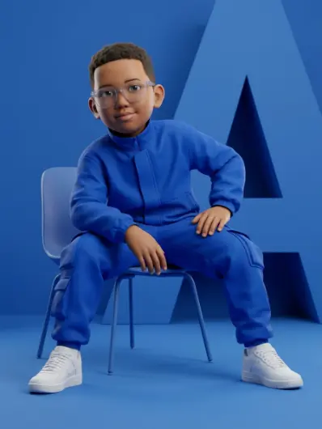

子どもたちへ
物語や歌、感情活動で、心の中の出来事を言葉にしやすくします。
無料の物語を読む →ライブラリーを準備しています...
メンバーライブラリーのプレビュー
やさしい物語、印刷できるワークシート、オーディオブック、落ち着く活動を通して、家庭や教室で感情について話しやすくします。
入り口を選ぶ
子ども、家庭での会話、教室でのひとときに合う、やさしい出発点を見つけましょう。
物語や歌、感情活動で、心の中の出来事を言葉にしやすくします。
無料の物語を読む →家庭で気持ちを支える会話のヒント、落ち着く方法、ガイド。
家庭向け資料を見る →授業で感情リテラシーを支える、子どもに親しみやすい物語と活動。
教育の歩みを見る →物語、落ち着くツール、保護者の声かけ、進歩バッジ、サポート検索をまとめた週間ガイドです。
プランを開く →支援の流れ
気持ちに名前をつけたり、体のサインに目を向けたりします。
その瞬間に合う物語、歌、活動、落ち着くツールを選びます。
一緒に話し、役立つ方法を練習し、小さな一歩を認めます。
ライブラリー利用
公開資料を今すぐ試すことも、家庭と教室向けの全コレクションを開くこともできます。
無料で体験
全メンバーライブラリー
物語の仲間たち
身近に感じられる物語を通して、それぞれのキャラクターが感情を探る旅に寄り添います。ログインしてすべてのキャラクターに会いましょう。
思いやりがあり、周りの人の気持ちを大切にする子です。
少し恥ずかしがり屋でも、勇気を出して挑戦し友達を思います。

アイデアがいっぱいで、大切な友達をやさしく守ります。
ライブラリーを開く
メンバーは直接入り、ご家庭は無料の試聴から始められます。
無料の物語から
まず公開作品を読み、その後ログインして全コレクションを探索できます。
保護者の声
⭐⭐⭐⭐⭐
「娘がワークシートを大好きになりました！気持ちについて話すのがもっと上手になりました。」
⭐⭐⭐⭐⭐
「フリップブックのおかげで、寝る前に感情について話せるようになりました。とても助かっています！」
⭐⭐⭐⭐⭐
「とても丁寧に作られていて、子どもにも分かりやすいです。毎週何かを印刷して使っています。」
子どもを支える大人へ
Healthy Little Minds は、子どもが信頼できる大人と感情を語るための物語と活動を提供します。追加の支援が必要な場合、専門的なメンタルヘルスケアの代わりにはなりません。
質問
子どもや若者に加え、保護者や先生が一緒に使えるヒントとツールを提供しています。
おすすめの物語を読み、無料オーディオブックを試聴できます。
全作品、音声、ワークシート、インタラクティブツール、支援資料を利用できます。
はい。スマートフォン、タブレット、パソコンで閲覧できます。